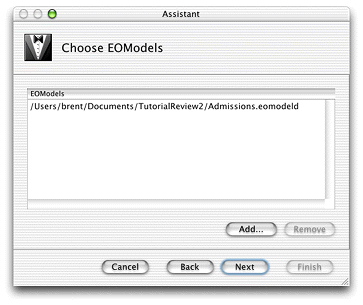
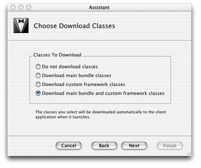

Project Builder is the WebObjects integrated development environment. Its many functions include these:
Project Builder provides an assistant to help you build a Java Client application starting with the Direct to Java Client project type. Follow these steps to create a new project:
Figure 3-10 Choose EOModel
Figure 3-11 Configure the class loader
If you're developing in Mac OS X, you can skip to "Using the Application". Or, if you want to learn more about the default project, Project Builder, launch arguments, and manually running the client application, continue with the next section.